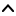

| Top |  |
| DBusGConnection * | dbus_g_bus_get () |
| DBusGConnection * | dbus_g_bus_get_private () |
| void | dbus_g_thread_init () |
| DBusGConnection * | dbus_g_connection_open () |
| DBusGConnection * | dbus_g_connection_ref () |
| void | dbus_g_connection_unref () |
| void | dbus_g_connection_flush () |
| DBusConnection * | dbus_g_connection_get_connection () |
| void | dbus_g_connection_register_g_object () |
| void | dbus_g_connection_unregister_g_object () |
| GObject * | dbus_g_connection_lookup_g_object () |
DBusGConnection * dbus_g_bus_get (DBusBusType type,GError **error);
dbus_g_bus_get is deprecated and should not be used in newly-written code.
New code should use GDBus instead. The closest equivalent
is g_bus_get_sync().
Returns a connection to the given bus. The connection is a global variable shared with other callers of this function.
(Internally, calls dbus_bus_get() then calls
dbus_connection_setup_with_g_main() on the result.)
DBusGConnection * dbus_g_bus_get_private (DBusBusType type,GMainContext *context,GError **error);
dbus_g_bus_get_private is deprecated and should not be used in newly-written code.
New code should use GDBus instead. The closest equivalent
is g_bus_get_sync().
Returns a connection to the given bus. The connection will be a private non-shared connection and should be closed when usage is complete.
Internally this function calls dbus_bus_get_private() then calls
dbus_connection_setup_with_g_main() on the result; see the documentation
of the former function for more information on private connections.
void
dbus_g_thread_init (void);
dbus_g_thread_init is deprecated and should not be used in newly-written code.
New code should use GDBus instead. GDBus is always thread-safe, whereas dbus-glib is never thread-safe.
Initializes the D-BUS thread system. This function may only be called once and must be called prior to calling any other function in the D-BUS API.
Equivalent to dbus_threads_init_default(), which does nothing.
dbus-glib requires dbus >= 1.8, which is thread-safe by default.
Note that dbus-glib's GObject mapping is explicitly *not* thread-safe.
DBusGConnection * dbus_g_connection_open (const gchar *address,GError **error);
dbus_g_connection_open is deprecated and should not be used in newly-written code.
New code should use GDBus instead. The closest equivalent
is g_dbus_connection_new_for_address_sync().
Returns a connection to the given address.
(Internally, calls dbus_connection_open() then calls
dbus_connection_setup_with_g_main() on the result.)
DBusGConnection *
dbus_g_connection_ref (DBusGConnection *connection);
dbus_g_connection_ref is deprecated and should not be used in newly-written code.
New code should use GDBusConnection instead.
Increment refcount on a DBusGConnection
void
dbus_g_connection_unref (DBusGConnection *connection);
dbus_g_connection_unref is deprecated and should not be used in newly-written code.
New code should use GDBusConnection instead.
Decrement refcount on a DBusGConnection
void
dbus_g_connection_flush (DBusGConnection *connection);
dbus_g_connection_flush is deprecated and should not be used in newly-written code.
The closest equivalent in GDBus is
g_dbus_connection_flush_sync()
Blocks until outgoing calls and signal emissions have been sent.
DBusConnection *
dbus_g_connection_get_connection (DBusGConnection *gconnection);
dbus_g_connection_get_connection is deprecated and should not be used in newly-written code.
New code should use GDBus instead.
Get the DBusConnection corresponding to this DBusGConnection. The return value does not have its refcount incremented.
void dbus_g_connection_register_g_object (DBusGConnection *connection,const char *at_path,GObject *object);
dbus_g_connection_register_g_object is deprecated and should not be used in newly-written code.
New code should use GDBus instead.
The closest equivalent is g_dbus_connection_register_object(),
but GDBusObjectManagerServer and GDBusObjectSkeleton provide
a higher-level API.
Registers a GObject at the given path. Properties, methods, and signals
of the object can then be accessed remotely. Methods are only available
if method introspection data has been added to the object's class
with dbus_g_object_type_install_info().
The registration will be cancelled if either the DBusConnection or
the GObject gets finalized, or if dbus_g_connection_unregister_g_object()
is used.
Note: If an object is registered multiple times, the first registration takes priority for cases such as turning an object into an object path.
void dbus_g_connection_unregister_g_object (DBusGConnection *connection,GObject *object);
dbus_g_connection_unregister_g_object is deprecated and should not be used in newly-written code.
New code should use GDBus instead.
The closest equivalent is g_dbus_connection_unregister_object().
Removes object
from any object paths at which it is exported on
connection
. Properties, methods, and signals
of the object can no longer be accessed remotely.
GObject * dbus_g_connection_lookup_g_object (DBusGConnection *connection,const char *at_path);
dbus_g_connection_lookup_g_object is deprecated and should not be used in newly-written code.
New code should use GDBus instead. There is no direct equivalent for this function.
FIXME
typedef struct _DBusGConnection DBusGConnection;
DBusGConnection is deprecated and should not be used in newly-written code.
New code should use GDBusConnection from the GIO library, which is not based on libdbus or dbus-glib.
A DBusGConnection is a boxed type abstracting a DBusConnection from libdbus.
#define DBUS_TYPE_G_CONNECTION (dbus_g_connection_get_g_type ())
DBUS_TYPE_G_CONNECTION is deprecated and should not be used in newly-written code.
New code should use GDBus instead.
Expands to a function call returning the boxed GType of a DBusGConnection.